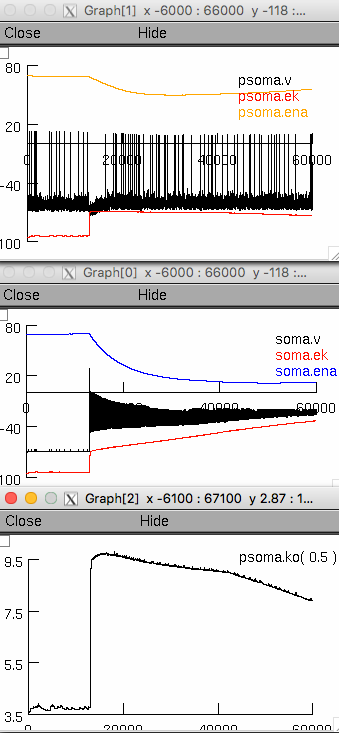

This is the readme for the models associated with the paper:
Gentiletti D, Suffczynski P, Gnatkovsky V, de Curtis M (2016) Changes
of Ionic Concentrations During Seizure Transitions - A Modeling
Study. Int J Neural Syst:1750004
This model was contributed by Damiano Gentiletti. The NEURON code
reproduces Figure 3b in the paper, i.e. the main simulation results -
see the file named "screenshot.png".
This model requires the NEURON simulator which is freely available from
http://www.neuron.yale.edu
Usage:
Autolaunch from ModelDB or download and extract this archive, compile
the mod files (see
https://senselab.med.yale.edu/ModelDB/NEURON_DwnldGuide.html
for details) and start the mosinit.hoc file ("nrngui mosinit.hoc" on
linux/unix).
Click on the "Init & Run" button. After about 20 seconds the
following graphs should appear similar to Fig 3b in the paper (because
there is pseudo-randomness in the simulation (see below)):

When testing the model, please run the simulation a couple of times.
This is necessary because of the element of randomness we inserted in
the implementation of the background activity in the pyramidal cell
(different outputs correspond to distinct realizations of such an
activity).
We remain avaible should further clarifications be needed.
Damiano Gentiletti gentiletti.damiano at gmail.com